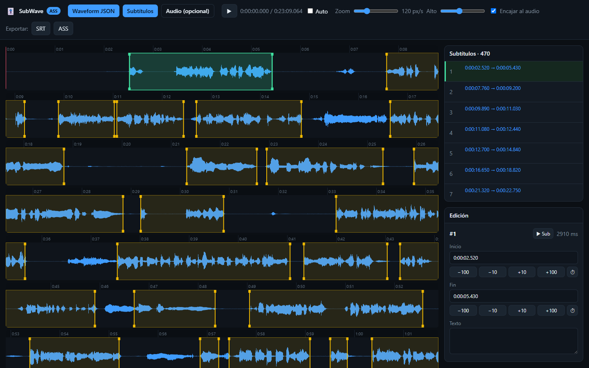
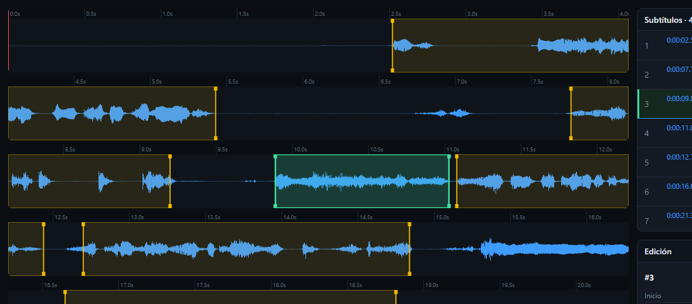

Waveform JSON and SubWave¶
The same waveform JSON can drive Lazy's detection and a visual editor. In the browser, it provides a visual reference for inspecting a proposed boundary or correcting raw timing. Audio must be loaded separately for listening.
What the JSON stores¶
Instead of saving every audio sample, the generator records the minimum and maximum in short blocks. It repeats this at several resolutions so an editor can draw a phrase or a longer passage without plotting every sample.
This example contains two levels of a 4 ms fragment. Each peaks array alternates minimum and maximum values:
{
"type": "waveform",
"version": 1,
"sampleRate": 48000,
"channels": 1,
"bits": 16,
"amplitudeFormat": "s16",
"amplitudeMin": -32768,
"amplitudeMax": 32767,
"pointLayout": "interleavedMinMax",
"durationMs": 4,
"totalSamples": 192,
"levels": [
{
"scale": 1,
"pointMs": 1,
"samplesPerPoint": 48,
"points": 4,
"peaks": [-1200, 1400, -800, 900, -600, 760, -300, 420]
},
{
"scale": 2,
"pointMs": 2,
"samplesPerPoint": 96,
"points": 2,
"peaks": [-1200, 1400, -600, 760]
}
]
}
| Field | Meaning |
|---|---|
pointMs |
Time covered by one min/max pair. |
samplesPerPoint |
Number of audio samples summarized by that pair. |
points |
Number of pairs in the level. |
peaks |
Interleaved minimum and maximum amplitudes. |
amplitudeMin / amplitudeMax |
Full amplitude range used to scale the drawing. |
The generator's base level is 1 ms at 48 kHz: 48 samples per point. Later levels double the scale. Finer resolution helps show short attacks, but the picture still does not tell you what produced a peak. The original sound cannot be reconstructed or played from these extrema.
Read the contour with the audio¶
An attack, a sustained body, and a decay can suggest where a phrase starts and ends. Breaths, music, and separation artifacts can have similar shapes. Listen before accepting a boundary. Reading time needs a separate check; it cannot be inferred from the waveform.
Edit in SubWave¶
SubWave loads the waveform, displays subtitle events over it, and lets you move their edges. It runs in a modern browser.
- Load the episode's
.waveform.json. - Load the matching
.ass,.ssa, or.srtsubtitle file. - Load the audio and select a cue from the timeline or list.
- Listen to the passage, then drag a boundary or edit its time in the panel.
- Export and inspect the result before replacing your working subtitle.
ASS export is intended to retain the header, styles, and untouched fields while updating the edited times. Reopen the exported file in Aegisub and compare those fields with the saved copy, especially after converting text or format. SRT export cannot preserve ASS-specific styling.

This step addresses raw timing: a late start, a clipped syllable, or an end attached to residual noise. Padding, scene snapping, and chaining come afterward in Aegisub, with its keyframes and Chrono Suite tools.

Lazy and SubWave read the same waveform data. That makes it possible to inspect an automatically proposed edge against the signal that produced it, while keeping the voice and the meaning as the final reference.